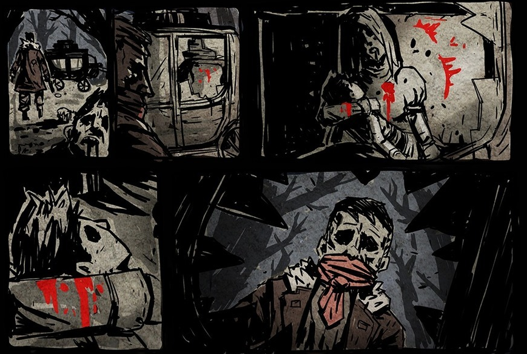

"No way out, hmph. Let's do this."
"길이 없구먼, 흠. 해보자고."
어느 날 교도소에 폭동이 일어났고 디스마스에게 탈출할 기회가 주어졌다.
도망자이면서 사냥당할 처지가 될게 뻔하지만
그토록 원했던 자유였기 때문에 과감하게 경비들을 줘패고, 사슬을 끊고,
도시의 아래 더럽고 냄새나는 운하쪽으로 숨어 들어갔다.
그토록 꿈꿨던 자유이건만 현실은 시궁창이었다.
구석을 찾아 숨어다니면서 벌레가 들끓는 음식을 먹으며 하루하루를 연명하고
병에 걸리고 굶주린 디스마스는 결국
정말 마지막으로 강도질을 하기로 한다.
디스마스는 악인들에게 자신의 고급 기술을 전수하면서
기초자금을 마련하여 마차를 털 계획을 짰다.
결전의 날, 마음을 굳게 먹고 계획했던 마차에 올라탔다.
디스마스는 간절했기 때문에 강도질은 그 어느 때보다 철저하고 완벽하게 이뤄졌다.
안도감과 뿌듯함도 잠시...
마차 안에는
자기가 쏜 총에 맞아 죽은 아이와 아이의 엄마.

디스마스는 서서 마차 안을 멍하니 바라보다가
갑자기 오만가지 감정들이 모여 사슬처럼 가슴을 꽉 조여매는 느낌을 받았다.
피해 숨을수도 도망칠수도 없는 추적자... '죄책감' 이었다.